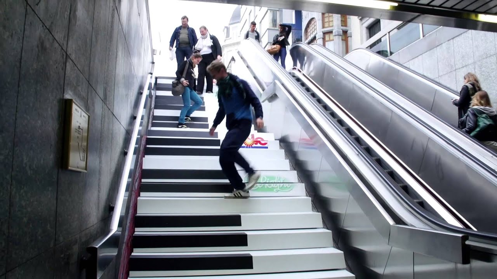
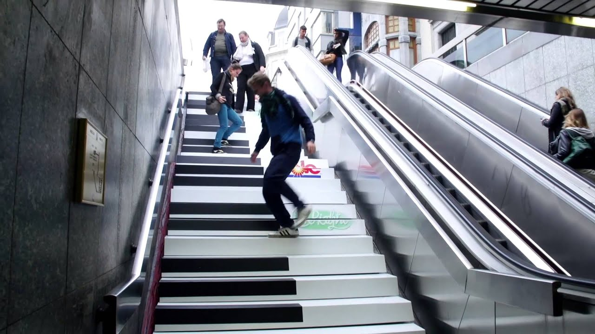

Week 7
Hunt n' Gather - examples of noteworthy PHYSICAL COMPUTING
Musical Stairs
Musical stairs are stairs that react to peolple's steps. With each step the stairs play a musical note, creating a unique and interactive experience for users.
More Info
 

The 30 Most Useful Arduino Projects in 2024
More Info
Interactive Clothing
More Info
Physical Computing Workshop
This week we have started the physical computing portion of the subject. We worked with Arduino kits and this is my first attempt at creating a simple circuit with a LED light and ultrasonic sensor. I find the physical computing aspect of the subject fascinating. It's just like playing with Lego, but with electronics. We assemble the kit and circuits and input the code to watch the magic work.